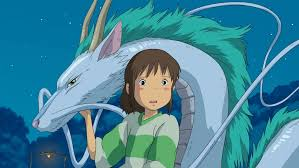
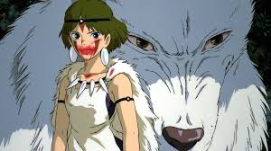
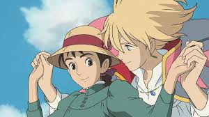
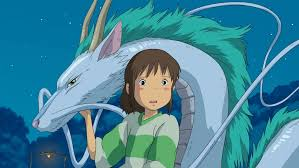
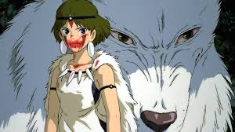
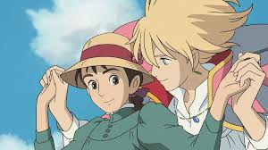

Estúdio Ghibli
O Estúdio Ghibli foi fundado em 1985 no Japão e é conhecido por suas animações inesquecíveis que capturam a essência da imaginação e da emoção humana. Sob a liderança de diretores como Hayao Miyazaki, o estúdio trouxe ao mundo obras-primas como A Viagem de Chihiro, Meu Amigo Totoro, e O Castelo Animado.

Filmes Mais Icônicos
Entre os filmes mais marcantes do Estúdio Ghibli estão:
| Título | Ano de Lançamento |
|---|---|
| A Viagem de Chihiro | 2001 |
| Meu Amigo Totoro | 1988 |
| O Castelo Animado | 2004 |
| Princesa Mononoke | 1997 |
 





Impacto Cultural
O Estúdio Ghibli não é apenas um estúdio de animação; é uma força cultural. Seus filmes são conhecidos por abordar temas como ecologia, feminismo, amor, e a complexidade das relações humanas, conectando gerações ao redor do mundo.